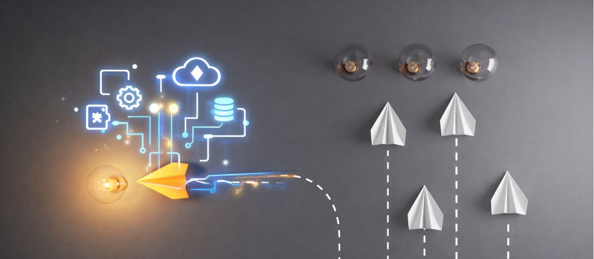

비즈니스 혁신의 4가지 형태
다르게 해결하기 · 문제 재정의 · 새로 생긴 문제 · 집토끼 전략
혁신의 방법은 무수히 많아 보인다. 그러나 실제로 성과를 만든 혁신은 네 가지 패턴 안에서 반복된다. 끝까지 읽으면 내 사업이 어느 패턴에 가까운지 판단할 수 있다.
이 결론에 이르기까지 수백 권의 혁신 관련 서적을 읽고, 국내외에서 혁신에 성공한 기업들의 사례를 분석해 왔다. 그 과정에서 한 가지 사실이 분명해졌다. 겉으로는 모두 다른 방식처럼 보이지만, 성과를 만든 혁신은 언제나 일정한 패턴을 따르고 있었다는 점이다.
먼저 네 가지 형태의 전체 지도를 보자. 이후 각 형태를 실제 사례로 하나씩 풀어간다.

다르게 해결하기 · 문제 재정의 · 새로 생긴 문제 · 집토끼 전략
첫 번째 형태는 고객이 겪는 문제는 그대로 두고, 해결하는 방식만 완전히 바꾸는 혁신이다. 이 형태는 늘 세 가지의 결합으로 만들어진다.
깨끗한 물을 마시고 싶다는 문제는 그대로였다. 바뀐 것은 그 문제를 해결하는 방식이었다.
제조업에 금융과 방문 관리를 붙이자, 가전이 서비스가 되었다
두 번째 형태는 해결할 문제 자체를 다시 정의하는 것이다. 이미 경쟁이 포화된 시장, 스펙 경쟁에 갇힌 시장일수록 강력하게 작동한다.
업계 전체가 하나의 기준(화질, 정확도, 가격)에 갇혀 소모전을 벌인다.
“어떻게 더 잘 만들까”가 아니라 “고객은 이걸로 무엇을 하고 싶은가”를 묻는다.
사는 이유가 달라지면서, 지금까지 사지 않던 사람이 고객이 된다.

보는 기기에서 공간을 완성하는 오브제로
TV 시장은 오랫동안 드라마와 뉴스를 보는 기기로 정의되어 있었다. 그래서 모두가 화소와 인치 경쟁에 갇혀 있었다.
삼성이 바꾼 것은 기술이 아니라 질문이었다.
“어떻게 더 좋은 화질을 만들까”가 아니라, “사람들은 거실에 무엇을 두고 싶어할까”

정확한 시간에서 나를 표현하는 수단으로
시계 시장 역시 정확한 시간이라는 기능 경쟁에 묶여 있었고, 전자 산업이 앞선 일본 기업의 가격 경쟁력에 밀리고 있었다.
세 번째 형태는 기술과 생활 방식이 바뀌면서 새롭게 생겨난 문제를 해결하는 혁신이다. 없던 문제가 생겼다는 것은 곧 없던 시장이 생겼다는 뜻이다.

장독대가 사라지자, 김치냉장고가 생겼다
아파트 주거 문화가 보편화되며 마당의 장독대가 사라졌다. 그때 지금까지 없던 문제가 생겼다.

소득이 오르자, 편한 옷이 아니라 입고 싶은 옷이 되었다
작업복은 오랫동안 편하고 안전하면 그만인 옷이었다. 소득 수준이 낮았기 때문에 그 이상은 요구되지 않았다.
네 번째 형태는 확장보다 심화에 가까운 혁신이다. 밖에서 새것을 찾는 대신, 내가 이미 가지고 있는 것에서 출발한다.
집토끼는 내가 이미 가지고 있는 것이고, 산토끼는 아직 밖에 있는 것이다.
지금까지 대부분의 비즈니스 전략은 산토끼 전략이었다. 새로운 고객을 찾아 나가고, 새로운 기술을 처음부터 만드는 방식이다. 집토끼 전략은 방향이 반대다. 이미 확보한 것을 다시 들여다보는 데서 시작한다.
새로운 고객을 확보하고, 새로운 기술을 개발한다. 비용과 시간이 많이 들고, 시장이 커지던 시절에 유효했던 방식이다.
확보한 고객과 축적한 기술을 입체적으로 활용한다. 남들은 처음부터 만들어야 하는 것을 나는 이미 갖고 있다.
많은 사람이 집토끼를 고객으로만 이해한다. 그러나 집토끼는 두 가지다. 지금까지 만들어 온 고객도 집토끼지만, 지금까지 쌓아 온 기술도 집토끼다. 이 둘을 구분해야 전략이 두 배로 넓어진다.
이미 나를 선택해 준 사람들. 이들이 겪는 다른 문제가 곧 다음 시장이다.
지금까지 축적한 기술과 핵심역량. 이것을 다른 산업에 옮기면 새로운 시장이 열린다.
그래서 집토끼 전략은 아래 두 가지 패턴으로 나타난다.
기존 상품 하나로 끝내지 않고, 그 고객이 겪는 다음 문제까지 이어서 해결한다. 여기에는 두 갈래가 있다.
하나는 그 고객이 이미 다른 곳에서 쓰고 있는 것을 내게서 쓰게 만드는 것이다. 다른 하나는 아직 아무도 주지 않은 것을 새로 만들어 그 고객에게 주는 것이다. 어느 쪽이든 고객 한 명이 나에게 쓰는 범위 자체가 넓어진다.
고객은 그대로 두고, 지금까지 쌓은 기술·데이터·운영 노하우를 전혀 다른 산업에 적용한다. 새 기술을 만드는 것이 아니라, 이미 가진 기술이 쓰일 곳을 새로 찾는 것이다.
코닝이 대표적이다. 지금까지 유리만 만들던 회사가 그 유리 기술을 그대로 통신 산업으로 옮겨 광섬유를 만들었다. 기술은 같았고, 응용 분야만 바뀌었다. 그리고 그 하나가 어마어마한 혁신이 되었다.
집토끼 전략은 갑자기 나온 발상이 아니다. 세상의 변화가 이 전략을 만들어냈다. 두 가지 흐름 때문이다.
인구 변화로 저출산·저성장이 이어지며 시장의 파이 자체가 줄어든다. 새 고객을 데려오는 비용은 계속 오른다.
기술 발달로 산업·업종·제품·서비스의 경계가 무너진다. 은행이 배달을, 제조사가 유통을 할 수 있게 되었다.

새것을 찾는 비용보다, 이미 가진 것을 다시 보는 값이 커진다
내 집토끼는 무엇인가?
내가 이미 확보한 고객은 지금 어떤 다른 문제를 겪고 있는가. 그리고 내가 이미 가진 기술은 어느 산업에서 다시 쓰일 수 있는가.
네 가지 형태를 알았다면 이제 무엇부터 해야 할까. 대부분의 사람은 새로운 사업이나 혁신을 고민할 때 가장 먼저 유행을 본다. 하지만 냉정하게 말하면, 눈에 보이는 유행을 쫓는 순간 이미 늦은 것이다.
이미 지나간 흐름이 만들어낸 결과다. 눈에 보일 때는 이미 만들어진 뒤라, 쫓아가도 주도권을 잡을 수 없다.
그 파도를 만들어낸 원인이다. 아직 상품으로 드러나지 않은 기술·인구·생활의 변화가 여기에 있다.
지금 내가 보고 있는 것은 파도인가, 바람인가?
경쟁사가 이미 하고 있는 것이라면 그것은 파도다. 아직 아무도 상품으로 만들지 않은 변화라면 그것이 바람이다.
진짜 혁신가는 트렌드를 쫓지 않고, 트렌드를 만들어낸다
네 가지 중 무엇이 맞는지는 상황이 정한다. 시장이 포화됐다면 형태 2, 시장 자체가 줄고 있다면 형태 4, 세상이 빠르게 바뀌는 중이라면 형태 3이 먼저 보인다.
진짜 혁신가들은 이미 상식이 된 유행을 쫓지 않았다. 아직 눈에 보이지 않는 변화의 기류, 곧 파도를 만들어내는 바람을 먼저 감지했다. 그리고 그 바람으로 새로운 트렌드를 만들어 시장을 이끌었다.